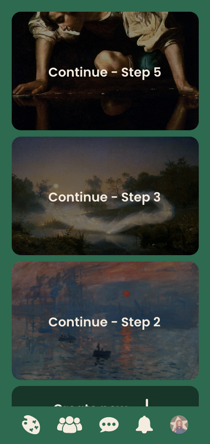
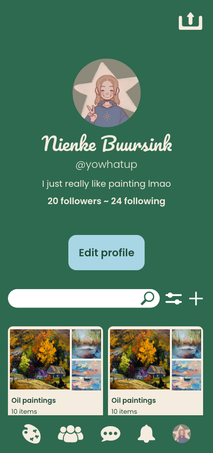

PaintPal
PaintPal is an app I've prototyped where AI helps you improve your painting skills and share them with your friends.
- Prototyped
- Multi device design
- Adobe XD


These are projects I've done that are either designed, prototyped or coded.
PaintPal is an app I've prototyped where AI helps you improve your painting skills and share them with your friends.
The Shine app is an already existing website which I replicated. The assignment was to make the website semantic, responsive and accessible.
Muziek makkers is a site where you can hear a small orchestra of animals (actually my friend) sing for you. This is the first time I used JavaScript in my coding.
I designed this website as a mock- business assignment for Gemeente Rotterdam. The website is a one-page website about a jazz festival. I focused on following a corporate identity, yet still trying to separate from other designers.
This is an app that displays different data to the user based on how they played a song on their guitar. The user gets to improve their skills more efficient this way. The teachers of these guitar players also get to see this data to use their time in lessons more productively.
This website was made in honour of the sustainability in Amsterdam. The website is designed for a mobile format, so make sure to scale down your browser when you look at it.